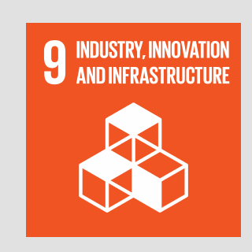

Urban access
Canada's digital divide
Canada is connected.
But not equally.
Canada is approaching universal broadband access, but the national picture hides a major gap affecting rural communities, the territories and First Nations reserve areas.
34.1
percentage-point gap
First Nations reserve areas
01
The national average is not the whole story
Access depends on where you live.
In 2024, 96.4% of Canadian households had access to 50/10 Mbps Internet. Availability was lower in rural communities, the territories and First Nations reserve areas.

What does 50/10 Mbps mean?
It refers to Internet service with download speeds of at least 50 megabits per second and upload speeds of at least 10 megabits per second.
02
Who remains without access?
Connection still does not reach every home.
In 2024, only 65.7% of households in First Nations reserve areas had access to high-speed Internet. About one in three households remained without access.
Urban areas
99.8% connectedAlmost every household has access.
First Nations reserve areas
65.7% connectedAbout one in three households remains without access.
House icons show an approximate comparison. Exact 2024 availability figures are shown above.
03
Why connection matters
When connection is unequal, opportunity is unequal too.
Unequal Internet access can create barriers to healthcare information, education, employment and banking in First Nations reserve areas.
72.6%
Health information
Searched for health information online
21.8%
Education
Took formal training or learning online
69.3%
Employment
Used the Internet for employment-related activities
77.6%
Banking
Used online banking
These online-activity figures describe Canadians overall. They show why reliable access matters, not activity rates specific to First Nations reserve areas.
Take action
Ask for equal connection.
Tell your Member of Parliament that reliable broadband should reach every community in Canada.
Message template

Sources and notes
- Canadian Radio-television and Telecommunications Commission, broadband availability data, 2024.
- Innovation, Science and Economic Development Canada, urban broadband availability.
- Statistics Canada, Canadian Internet Use Survey, 2022.
This project supports UN Sustainable Development Goal 9: Industry, Innovation and Infrastructure.